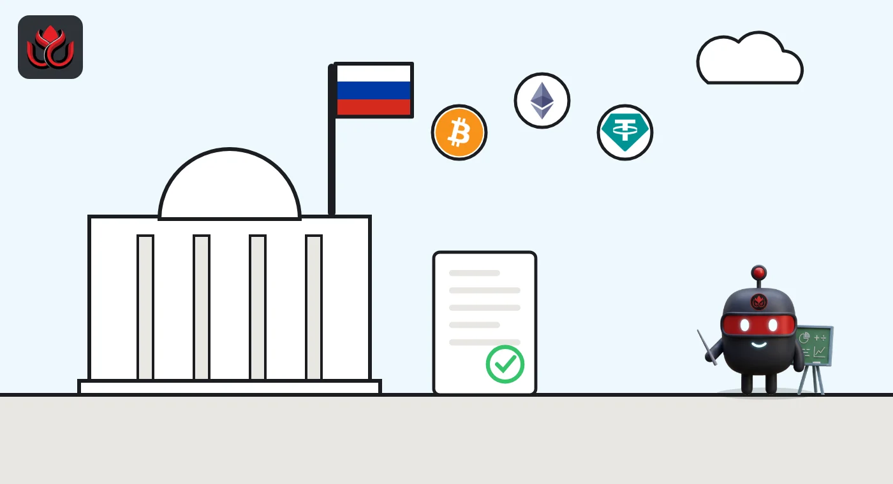

Russia lets ordinary investors buy only BTC, ETH and USDT, capped at about $3,665 a year
The Bank of Russia's directive 7441-U, published November 6, 2026, names just three assets that non-qualified investors may buy through a broker, with a yearly limit of 300,000 rubles. It enters into force 10 days after publication.
Key points
- Directive 7441-U lists three assets for non-qualified investors: bitcoin (BTC), ether (ETH) and USD Tether (USDT). Nothing else is on the list.
- The yearly cap is 300,000 rubles of crypto bought through a broker in a calendar year, about $3,665 at CoinGecko's USDT rate on November 8, 2026.
- The Bank of Russia's crypto launch page says the directive was registered with the Justice Ministry on October 30 and published November 6. It takes effect 10 days after publication, which by our count is November 17, 2026.
- Using crypto to pay for things inside Russia stays banned. Firms have until July 1, 2027, to get licensed.
What the Bank of Russia published
Russia's central bank has published the rule that tells ordinary investors what crypto they may buy and how much. The text of directive 7441-U, signed by Bank of Russia Governor Elvira Nabiullina, sets a yearly limit for a "non-qualified investor resident" buying through a broker. In plain words, that is a regular Russian saver who does not hold professional investor status.
The Bank of Russia's crypto market launch page lists the directive as dated September 11, 2026, registered with the Justice Ministry on October 30 (No. 88991) and published November 6. The page itself was last updated November 7. One glossary entry on that page still calls the directive "awaiting registration," so the two entries do not match. We report the dated entry.
The directive says it "shall enter into force upon the expiry of 10 days after the day of its official publication" (our translation). Counting from November 6, that points to November 17, 2026.
Only three assets made the list
The directive names three assets, each with a code: bitcoin and ether in item 3, USDT in item 8.
- Bitcoin (BTC)
- Ether (ETH)
- USD Tether (USDT), which the directive lists as a foreign digital instrument
No XRP, no SOL, no BNB. The directive defines measures such as market capitalization (closing price times coins in circulation) and average daily trading volume on foreign venues, but sets no numeric threshold in its text.
For USDT, the launch page says the token "may be admitted" to organized trading once 7441-U takes effect. That allows a listing but is not one. We found no Russian trading venue's own notice that it has listed any of the three yet.

The 300,000 ruble cap in real money
The cap clause says the maximum aggregate value "amounts to 300 thousand rubles" (our translation). It covers the total value of crypto a non-qualified investor buys through a broker during one calendar year.
At CoinGecko prices checked November 8, 2026, at 12:40 a.m. ET, one USDT cost 81.84 rubles. That makes the cap worth about $3,665. The same money buys about 0.048 BTC (bitcoin at 6,205,136 rubles, or $75,741) or about 1.6 ETH (ether at 182,815 rubles, or $2,231).
Qualified investors, meaning people with professional investor status, face no cap and may trade any cryptocurrency, the Bank of Russia said in its July 21, 2026 release. Both groups must pass a risk test first.
What 300,000 rubles buys (CoinGecko, November 8, 2026, 12:40 a.m. ET)
US$
Source: CoinGecko; cap from Bank of Russia directive 7441-U
How Russia got here
The Bank of Russia proposes a crypto framework: tested access for retail, a 300,000 ruble yearly cap through one intermediary
The State Duma passes the crypto law in its final readings; the Bank of Russia says it takes effect September 1, 2026
Federal Law No. 282-FZ on digital currencies and digital rights is dated
Directive 7441-U is dated
7441-U is registered with the Justice Ministry (No. 88991)
7441-U is published
Expected entry into force, 10 days after publication (our count)
End of the licensing transition; peer-to-peer deals allowed only until this date
Non-qualified investors may only be credited crypto admitted to trading by a Russian organizer
What stays banned
Crypto still cannot be used as money at home. "It still will be prohibited to use cryptocurrencies in payments within Russia," the Bank of Russia said in July. Exporters and importers, by contrast, may use crypto for cross-border payments.
Residents who hold crypto abroad must report it to the tax authorities. Crypto bought in Russia may leave the country only through regulated intermediaries. The bank's December 2025 proposal warned investors that they "might lose their funds."
LC Insight analysis
This section is our reading of the facts above, not a statement of fact.
- We think the three-asset list matters more than the cap. Limiting retail to BTC, ETH and USDT keeps Russian savers away from thin altcoins, and USDT gives them a dollar-linked token inside a regulated channel.
- The likely result is modest flows at first. About $3,665 a year per person is small, and no venue has yet posted its own listing notice.
- USDT is the only dollar-linked token on the list. Whether Tether comments on its token being named in a Russian central bank directive is worth watching.
What's next
- Whether 7441-U takes effect on November 17, 2026, as the 10-day rule implies
- The first Russian broker or exchange notice listing BTC, ETH or USDT for retail
- Any statement from Tether on USDT's inclusion
- Updates to the Bank of Russia's registries of crypto market participants
Disclaimer. This article is based on public information and the sources listed below as of the update time shown. It is for information only and is not investment, legal or tax advice. Figures may change as companies and authorities publish new data.
Sources
- Bank of Russia, Directive 7441-U on the yearly limit for non-qualified investors (text, read November 8, 2026, 12:45 a.m. ET)
- Bank of Russia, crypto market launch page (updated November 7, 2026; read November 8, 2026, 12:45 a.m. ET)
- Bank of Russia, "Russia introduces cryptocurrency regulation" (July 21, 2026)
- Bank of Russia, "Cryptocurrency market prospects: Bank of Russia's proposals" (December 23, 2025)
- CoinGecko, Tether (USDT) price in rubles (November 8, 2026, 12:40 a.m. ET)
- CoinGecko, Bitcoin (BTC) price (November 8, 2026, 12:40 a.m. ET)